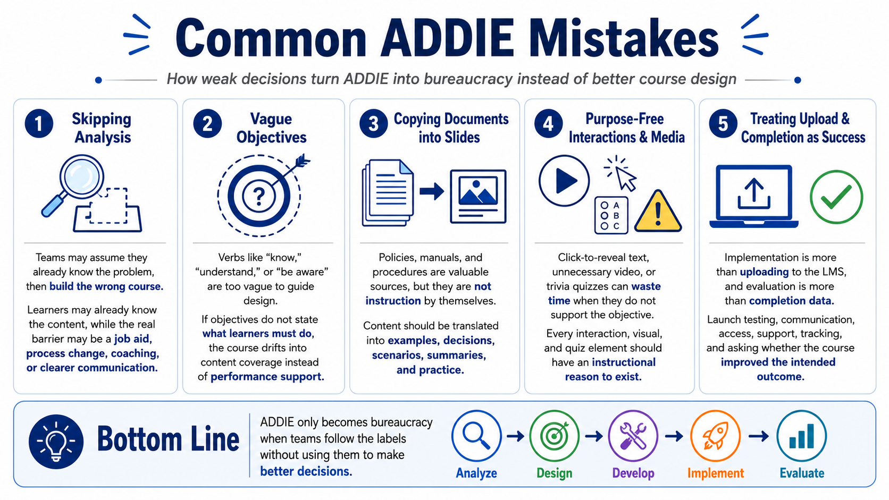

Common ADDIE Mistakes in eLearning
Connecting to LMS... Progress: in progress

Narration
A common mistake is skipping analysis. When teams assume they already know the problem, they often build the wrong course. The result may explain information learners already understand, ignore the real performance barrier, or force eLearning into a problem better solved by a job aid, process change, coaching, or clearer communication.
Another mistake is using vague objectives. Objectives such as know, understand, or be aware can be useful as informal language, but they rarely guide design by themselves. If the objective does not identify what learners should do with the knowledge, the course may drift into content coverage rather than performance support.
Copying source documents into slides is also common. Source material is valuable, but it is not automatically instruction. Policies, manuals, and procedure documents often need translation into examples, decisions, scenarios, summaries, and practice. The course should help learners use the source material, not simply reproduce it in a less convenient format.
Interactions and media can become mistakes when added without purpose. A click-to-reveal interaction that hides ordinary text may slow learners down. A video that could have been a simple diagram may waste time. A quiz that asks trivia may not measure the objective. Every course element should have an instructional reason to exist.
Finally, teams sometimes treat LMS upload as the end of implementation and completion as the only evaluation. Real implementation includes launch testing, communication, access, support, and tracking. Real evaluation asks whether the course improved the intended outcome. ADDIE becomes bureaucracy only when teams follow the labels without using them to make better decisions.